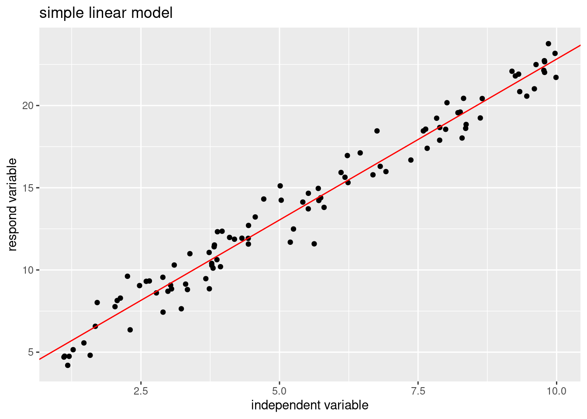

6 最小二乘线性回归法
6.1 相关概念
- 因变量(Dependent variable,Y)：依赖于其它变量的变化而变化，响应变量；
- 自变量(Independent variable,X)：可以直接控制的变量，协变量；
- 有监督学习的数据表示：\(D=\{(x_1,y_1),\cdots,x_n,y_n)\},x\in R^p,y \in R\);
- 模型（model)：函数；
- 参数(Parameters)：参数是添加到模型中用于估计输出的成分;
6.2 线性模型
因变量的值由独立自变量之间的线性数学模型决定。\[y=\beta_0+\beta_1\times x_1+,\cdots,+\beta_p\times x_p\],模型表示：
\[\begin{bmatrix} y_{1} \\ y_{2} \\ \cdots\\ y_{n} \end{bmatrix}\] = \[\begin{bmatrix} \beta_0 \\ \beta_0 \\ \cdots \\ \beta_0 \end{bmatrix}\] + \[\begin{bmatrix} x_{11} & x_{12} & \dots & x_{1p} \\ x_{21} & x_{22} & \dots & x_{2p} \\ \cdots & \cdots & \cdots & \cdots\\ x_{n1} & x_{n2} & \dots & x_{np} \end{bmatrix} \times \begin{bmatrix} \beta_1 \\ \beta_2 \\ \cdots \\ \beta_p \end{bmatrix}\]模型的矩阵表示： \[Y=X\beta\]
6.2.2 简单线性模型(Simple Linear Model,SLM)
- y响应变量为连续型变量；
- x是自变量，只包含一个变量；
- \(y_i=\beta_0 + \beta_1*x_i+\epsilon_i\)
library(ggplot2)
# Simulated data produced
x <- runif(100,1,10)
y <- 3+2*x+rnorm(100,0,1)
data_slm <- data.frame(x=x,y=y)
head(data_slm)## x y
## 1 2.887331 5.908156
## 2 1.015339 4.605947
## 3 3.051336 7.968414
## 4 4.741316 13.114120
## 5 5.363838 13.587961
## 6 7.890755 19.000237##
## Call:
## lm(formula = y ~ ., data = data_slm)
##
## Residuals:
## Min 1Q Median 3Q Max
## -2.8266 -0.5484 -0.1005 0.4653 2.8146
##
## Coefficients:
## Estimate Std. Error t value Pr(>|t|)
## (Intercept) 3.05315 0.22658 13.47 <2e-16 ***
## x 1.96778 0.03762 52.30 <2e-16 ***
## ---
## Signif. codes: 0 '***' 0.001 '**' 0.01 '*' 0.05 '.' 0.1 ' ' 1
##
## Residual standard error: 0.9521 on 98 degrees of freedom
## Multiple R-squared: 0.9654, Adjusted R-squared: 0.9651
## F-statistic: 2736 on 1 and 98 DF, p-value: < 2.2e-16
# visual the model
ggplot(data_slm,aes(x,y))+geom_point()+
geom_abline(slope=fit_slm$coefficients[2],
intercept=fit_slm$coefficients[1],
color="red")+
labs(x="independent variable",y="respond variable",title="simple linear model")
6.2.3 多元线性回归(Multiple Linear Model,mlm)
- y响应变量为连续型变量；
- x是自变量，包含多个变量（至少是2个及以上）；
- \(y_i=\beta_0 + \beta_{11}*x_{i1}+\cdots+\beta_{ip}*x_{ip}+\epsilon_i\)
# Simulated data produced
x1 <- runif(100,1,10)
x2 <- runif(100,1,10)
y <- 2*x1+5*x2+rnorm(100,0,2)
data_mlm <- data.frame(x1=x1,x2=x2,y=y)
head(data_mlm)## x1 x2 y
## 1 6.241952 3.606435 29.99643
## 2 2.885087 7.412431 40.83235
## 3 6.540537 8.467863 54.09935
## 4 7.481641 3.382723 30.27384
## 5 1.780589 9.476414 51.06193
## 6 5.672808 5.312551 38.91272##
## Call:
## lm(formula = y ~ x1 + x2, data = data_mlm)
##
## Residuals:
## Min 1Q Median 3Q Max
## -4.7345 -1.1832 -0.0344 1.0249 7.0554
##
## Coefficients:
## Estimate Std. Error t value Pr(>|t|)
## (Intercept) -0.08563 0.66319 -0.129 0.898
## x1 2.02970 0.08120 24.997 <2e-16 ***
## x2 5.05981 0.08093 62.522 <2e-16 ***
## ---
## Signif. codes: 0 '***' 0.001 '**' 0.01 '*' 0.05 '.' 0.1 ' ' 1
##
## Residual standard error: 2.058 on 97 degrees of freedom
## Multiple R-squared: 0.9798, Adjusted R-squared: 0.9794
## F-statistic: 2350 on 2 and 97 DF, p-value: < 2.2e-16
# install.packages("plot3D")
library(plot3D)## Warning in fun(libname, pkgname): couldn't connect to display ":0"
scatter3D(x=data_mlm$x1,y=data_mlm$x2,z=data_mlm$y,phi = 30, bty = "g")
6.2.4 回归实例
- 使用MASS库中所带的波士顿房价数据，其中的因变量为房价的中位数，自变量为房龄、房间数等，想预测房价。
## [1] "crim" "zn" "indus" "chas" "nox" "rm" "age"
## [8] "dis" "rad" "tax" "ptratio" "black" "lstat" "medv"
plot(Boston$medv,Boston$lstat)
##
## Call:
## lm(formula = Boston$medv ~ Boston$lstat, data = Boston)
##
## Residuals:
## Min 1Q Median 3Q Max
## -15.168 -3.990 -1.318 2.034 24.500
##
## Coefficients:
## Estimate Std. Error t value Pr(>|t|)
## (Intercept) 34.55384 0.56263 61.41 <2e-16 ***
## Boston$lstat -0.95005 0.03873 -24.53 <2e-16 ***
## ---
## Signif. codes: 0 '***' 0.001 '**' 0.01 '*' 0.05 '.' 0.1 ' ' 1
##
## Residual standard error: 6.216 on 504 degrees of freedom
## Multiple R-squared: 0.5441, Adjusted R-squared: 0.5432
## F-statistic: 601.6 on 1 and 504 DF, p-value: < 2.2e-16
# multiple variance regression
mlm.fit <- lm(Boston$medv~Boston$lstat+Boston$age,data=Boston)
summary(mlm.fit)##
## Call:
## lm(formula = Boston$medv ~ Boston$lstat + Boston$age, data = Boston)
##
## Residuals:
## Min 1Q Median 3Q Max
## -15.981 -3.978 -1.283 1.968 23.158
##
## Coefficients:
## Estimate Std. Error t value Pr(>|t|)
## (Intercept) 33.22276 0.73085 45.458 < 2e-16 ***
## Boston$lstat -1.03207 0.04819 -21.416 < 2e-16 ***
## Boston$age 0.03454 0.01223 2.826 0.00491 **
## ---
## Signif. codes: 0 '***' 0.001 '**' 0.01 '*' 0.05 '.' 0.1 ' ' 1
##
## Residual standard error: 6.173 on 503 degrees of freedom
## Multiple R-squared: 0.5513, Adjusted R-squared: 0.5495
## F-statistic: 309 on 2 and 503 DF, p-value: < 2.2e-16- 结果解释：变量之间独立的情况下，系数就为影响程度，若存在多重共线性，则系数的解释比较复杂。